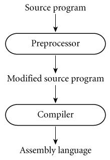

|
|
|
|
1.4 Compilation and Interpretation
|
|
At the highest level of abstraction, the compilation and
execution of a program in Pure compilation a high-level language look something
like this:
The compiler translates the high-level source program
into an equivalent target program (typically in machine language), and then
goes away. At some arbitrary later time, the user tells the operating system to
run the target program. The compiler is the locus of control during
compilation; the target program is the locus of control during its own
execution. The compiler is itself a machine language program, presumably
created by compiling some other high-level program. When written to a file in a
format understood by the operating system, machine language is commonly known
as object code.
|
|
Example 1.8: Pure
interpretation
|
|
An alternative style of implementation for high-level
languages is known as interpretation.
Unlike a compiler, an interpreter stays around for the
execution of the application. In fact, the interpreter is the locus of control
during that execution. In effect, the interpreter implements a virtual machine
whose "machine language" is the high-level programming language. The
interpreter reads statements in that language more or less one at a time,
executing them as it goes along.
|
|
In general, interpretation leads to greater flexibility and
better diagnostics (error messages) than does compilation. Because the source
code is being executed directly, the interpreter can include an excellent
source-level debugger. It can also cope with languages in which fundamental
characteristics of the program, such as the sizes and types of variables, or
even which names refer to which variables, can depend on the input data. Some
language features are almost impossible to implement without interpretation: in
Lisp and Prolog, for example, a program can write new pieces of itself and
execute them on the fly. (Several scripting languages, including Perl, Tcl,
Python, and Ruby, also provide this capability.) Delaying decisions about
program implementation until run time is known as late binding; we will
discuss it at greater length in Section 3.1.
Compilation, by contrast, generally leads to better
performance. In general, a decision made at compile time is a decision that
does not need to be made at run time. For example, if the compiler can
guarantee that variable x
will always lie at location 49378, it can generate machine language instructions that access
this location whenever the source program refers to x. By contrast, an interpreter may need to look x up in a table every time it is accessed, in order to find
its location. Since
the (final version of a) program is compiled only once, but generally executed
many times, the savings can be substantial, particularly if the interpreter is
doing unnecessary work in every iteration of a loop.
Example 1.9: Mixing
compilation and interpretation
|
|
While the conceptual difference between compilation and
interpretation is clear, most language implementations include a mixture of
both. They typically look like this:
We generally say that a language is "interpreted"
when the initial translator is simple. If the translator is complicated, we say
that the language is "compiled." The distinction can be confusing
because "simple" and "complicated" are subjective terms,
and because it is possible for a compiler (complicated translator) to produce
code that is then executed by a complicated virtual machine (interpreter); this
is in fact precisely what happens by default in Java. We still say that a
language is compiled if the translator analyzes it thoroughly (rather than
effecting some "mechanical" transformation), and if the intermediate
program does not bear a strong resemblance to the source. These two characteristics¡ªthorough
analysis and nontrivial transformation¡ªare the hallmarks of compilation.
|
|
|
|
In practice one sees a broad spectrum of implementation
strategies:
¡ì Most interpreted languages employ an initial translator (a preprocessor)
that removes comments and white space, and groups characters together into tokens
such as keywords, identifiers, numbers, and symbols. The translator may also expand
abbreviations in the style of a macro assembler. Finally, it may identify
higher-level syntactic structures, such as loops and subroutines. The goal is to
produce an intermediate form that mirrors the structure of the source, but can
be interpreted more efficiently.
Design & Implementation
Compiled and interpreted languages
Certain languages (e.g., Smalltalk and Python) are sometimes
referred to as "interpreted languages" because most of their semantic
error checking must be performed at run time. Certain other languages (e.g.,
Fortran and C) are sometimes referred to as "compiled languages"
because almost all of their semantic error checking can be performed
statically. This terminology isn't strictly correct: interpreters for C and
Fortran can be built easily, and a compiler can generate code to perform even
the most extensive dynamic semantic checks. That said, language design has a
profound effect on "compilability."
|
|
|
|
In some very early implementations of Basic, the manual
actually suggested removing comments from a program in order to improve its
performance. These implementations were pure interpreters; they would re-read
(and then ignore) the comments every time they executed a given part of the
program. They had no initial translator.
Example 1.11: Library
routines and linking
|
|
¡ì The typical Fortran implementation comes close to pure
compilation. The compiler translates Fortran source into machine language.
Usually, however, it counts on the existence of a library of subroutines
that are not part of the original program. Examples include mathematical
functions (sin,
cos, log, etc.) and I/O. The compiler relies on a separate program,
known as a linker, to merge the appropriate library routines into the
final program:
In some sense, one may think of the library routines as
extensions to the hardware instruction set. The compiler can then be thought of
as generating code for a virtual machine that includes the capabilities of both
the hardware and the library.
In a more literal sense, one can find interpretation in the
Fortran routines for formatted output. Fortran permits the use of format statements that control the alignment of output in columns,
the number of significant digits and type of scientific notation for
floating-point numbers, inclusion/suppression of leading zeros, and so on.
Programs can compute their own formats on the fly. The output library routines
include a format interpreter. A similar interpreter can be found in the printf routine of C and its descendants.
|
|
Example 1.12:
Post-compilation assembly
|
|
¡ì Many compilers generate assembly language instead of machine
language. This convention facilitates debugging, since assembly language is
easier for people to read, and isolates the compiler from changes in the format
of machine language files that may be mandated by new releases of the operating
system (only the assembler must be changed, and it is shared by many
compilers).
|
|
Example 1.13: The C
preprocessor
|
|
¡ì Compilers for C (and for many other languages running under Unix)
begin with a preprocessor that removes comments and expands macros. The
preprocessor can also be instructed to delete portions of the code itself,
providing a conditional compilation facility that allows several
versions of a program to be built from the same source.

|
|
Example 1.14:
Source-to-source translation (C++)
|
|
¡ì C++ implementations based on the early AT&T compiler
actually generated an intermediate program in C, instead of in assembly
language. This C++ compiler was indeed a true compiler: it performed a complete
analysis of the syntax and semantics of the C++ source program, and with very
few exceptions generated all of the error messages that a programmer would see
prior to running the program. In fact, programmers were generally unaware that the
C compiler was being used behind the scenes. The C++ compiler did not invoke
the C compiler unless it had generated C code that would pass through the
second round of compilation without producing any error messages.
|
|
Occasionally one would hear the C++ compiler referred to as
a preprocessor, presumably because it generated high-level output that was in
turn compiled. I consider this a misuse of the term: compilers attempt to
"understand" their source; preprocessors do not. Preprocessors
perform transformations based on simple pattern matching, and may well produce
output that will generate error messages when run through a subsequent stage of
translation.
|
|
¡ì Many compilers are self-hosting: they are written in
the language they compile¡ªAda compilers in Ada, C compilers in C. This raises
an obvious question: how does one compile the compiler in the first place? The
answer is to use a technique known as bootstrapping, a term derived from
the intentionally ridiculous notion of lifting oneself off the ground by
pulling on one's bootstraps. In a nutshell, one starts with a simple
implementation¡ªoften an interpreter¡ªand uses it to build progressively more
sophisticated versions. We can illustrate the idea with an historical example.
Many early Pascal compilers were built around a set of tools
distributed by Niklaus Wirth. These included the following.
o
A Pascal compiler, written in Pascal, that would generate
output in P-code, a stack-based language similar to the byte code
of modern Java compilers
o
The same compiler, already translated into P-code
o
A P-code interpreter, written in Pascal
To get Pascal up and running on a local machine, the user of
the tool set needed only to translate the P-code interpreter (by hand) into some
locally available language. This translation was not a difficult task; the
interpreter was small. By running the P-code version of the compiler on top of the
P-code interpreter, one could then compile arbitrary Pascal programs into
P-code, which could in turn be run on the interpreter. To get a faster
implementation, one could modify the Pascal version of the Pascal compiler to
generate a locally available variety of assembly or machine language, instead
of generating P-code (a somewhat more difficult task). This compiler could then
be bootstrapped¡ªrun through itself¡ªto yield a machine code version of the
compiler.
For a more modern example, suppose we were building one of the
first compilers for Java. If we had a C compiler already, we might start by
writing, in a simple subset of C, a compiler for an equally simple subset of
Java. Once this compiler was working, we could hand-translate the C code into
our subset of Java and run the compiler through itself. We could then
repeatedly extend the compiler to accept a larger subset of Java, bootstrap it
again, and use the extended language to implement an even larger subset.
|
|
Design & Implementation
The early success of Pascal
The P-code-based implementation of Pascal, and its use of bootstrapping,
are largely responsible for the language's remarkable success in academic
circles in the 1970s. No single hardware platform or operating system of that
era dominated the computer landscape the way the x86, Linux, and Windows do
today. [8] Wirth's toolkit made
it possible to get an implementation of Pascal up and running on almost any
platform in a week or so. It was one of the first great successes in system
portability.
|
|
Example 1.16: Compiling
interpreted languages
|
|
¡ì One will sometimes find compilers for languages (e.g., Lisp,
Prolog, Smalltalk, etc.) that permit a lot of late binding, and are
traditionally interpreted. These compilers must be prepared, in the general
case, to generate code that performs much of the work of an interpreter, or
that makes calls into a library that does that work instead. In important
special cases, however, the compiler can generate code that makes reasonable
assumptions about decisions that won't be finalized until run time. If these
assumptions prove to be valid the code will run very fast. If the assumptions
are not correct, a dynamic check will discover the inconsistency, and revert to
the interpreter.
|
|
Example 1.17: Dynamic
and just-in-time compilation
|
|
¡ì In some cases a programming system may deliberately delay
compilation until the last possible moment. One example occurs in
implementations of Lisp or Prolog that invoke the compiler on the fly, to
translate newly created source into machine language, or to optimize the code
for a particular input set. Another example occurs in implementations of Java.
The Java language definition defines a machine-independent intermediate form
known as byte  code. Byte code is the standard format
for distribution of Java programs; it allows programs to be transferred easily
over the Internet, and then run on any platform. The first Java implementations
were based on byte-code interpreters, but more recent (faster) implementations
employ a just-in-time compiler that translates byte code into machine
language immediately before each execution of the program. C#, similarly, is
intended for just-in-time translation. The main C# compiler produces .NET
Common Intermediate Language (CIL), which is then translated into machine
language immediately prior to execution. CIL is deliberately language
independent, so it can be used for code produced by a variety of front-end
compilers.
code. Byte code is the standard format
for distribution of Java programs; it allows programs to be transferred easily
over the Internet, and then run on any platform. The first Java implementations
were based on byte-code interpreters, but more recent (faster) implementations
employ a just-in-time compiler that translates byte code into machine
language immediately before each execution of the program. C#, similarly, is
intended for just-in-time translation. The main C# compiler produces .NET
Common Intermediate Language (CIL), which is then translated into machine
language immediately prior to execution. CIL is deliberately language
independent, so it can be used for code produced by a variety of front-end
compilers.
|
|
Example 1.18: Microcode
(firmware)
|
|
¡ì On the CD On some machines (particularly those designed before
the mid-1980s), the assembly-level instruction set is not actually implemented
in hardware, but in fact runs on an interpreter. The interpreter is written in
low-level instructions called microcode (or firmware), which is
stored in read-only memory and executed by the hardware. Microcode and
microprogramming are considered further in Section 5.4.1.
|
|
As some of these examples make clear, a compiler does not
necessarily translate from a high-level language into machine language. It is
not uncommon for compilers, especially prototypes, to generate C as output. A
little further afield, text formatters like TEX and troff are actually compilers, translating high level document
descriptions into commands for a laser printer or phototypesetter. (Many laser
printers themselves incorporate interpreters for the Postscript pagedescription
language.) Query language processors for database systems are also compilers,
translating languages like SQL into primitive operations on files. There are
even compilers that translate logic-level circuit specifications into
photographic masks for computer chips. Though the focus in this book is on
imperative programming languages, the term "compilation" applies
whenever we translate automatically from one nontrivial language to another,
with full analysis of the meaning of the input.
[8]Throughout this book we will use the term "x86" to
refer to the instruction set architecture of the Intel 8086 and its
descendants, including the various Pentium processors. Intel calls this
architecture the IA-32, but x86 is a more generic term that encompasses the
offerings of competitors such as AMD as well.